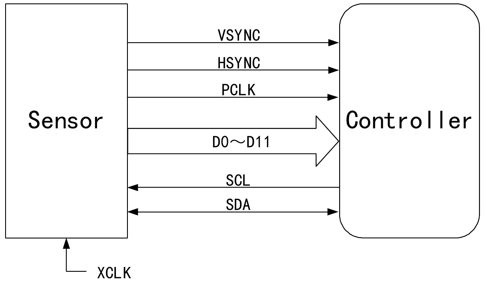
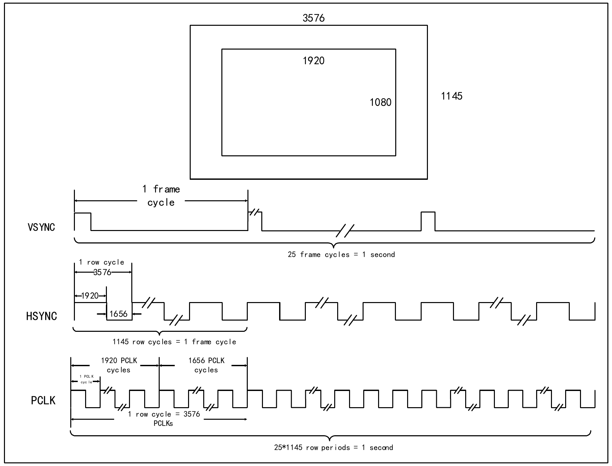
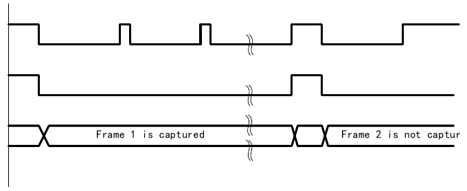
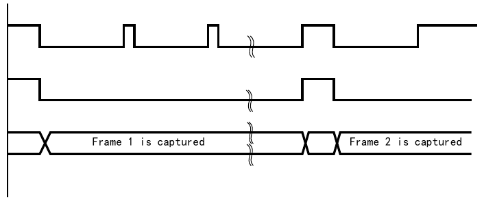
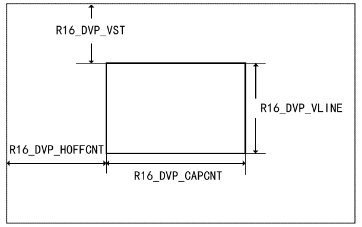
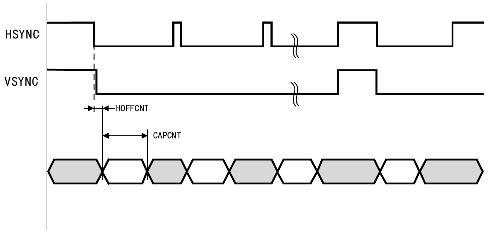

The Digital Video Port (DVP) is used to connect to camera modules to acquire image data streams. It provides an 8/10/12-bit parallel interface for communication and supports a maximum pixel clock input frequency of 150 MHz. It supports image data organized in raw line and frame formats, such as YUV, RGB, etc., and also supports compressed image data such as JPEG format. It can receive high-speed parallel data streams output by external 8-bit, 10-bit, and 12-bit camera modules. During reception, synchronization is primarily achieved through VSYNC and HSYNC signals. Image cropping functionality is supported.

| Name | Signal Type | Description |
|---|---|---|
| PCLK | Input | Pixel clock input |
| DATA[11:0] | Input | Pixel data input |
| VSYNC | Input | Frame synchronization signal input |
| HSYNC | Input | Line synchronization signal input |
The digital signal data stream output by a commonly used DVP interface sensor module has a certain relationship with the image size. The following is an example using one image data.
As shown in Figure 23-2, the sensor internally has a complete image size of 3576×1145. After internal scaling processing, the image data size finally output from the interface is 1920×1080, with an image refresh rate of 25.

HCLK is the time for one pixel transfer, so HSYNC is 3576 times HCLK. Among the 3576 pixels, only 1920 pixels are valid; during the remaining 1656 pixel periods, the sensor does not transmit data. VSYNC is the frame synchronization signal, so the VSYNC period is 3576×1145 times HCLK. Similarly, only during the 1920×1080 valid pixel periods does the sensor transmit data. If the sensor transmits JPEG compressed data, the HSYNC signal may not be needed.
The relationship between DVP interface signals and image data is primarily based on the datasheet of the selected sensor.
When using the digital video port to receive image data, the DVP-related control registers must be correctly configured to match the mode of the image sensor. The specific operation steps are as follows:
The DVP interface supports two capture modes: snapshot (single frame) mode and continuous mode.
In this mode, only a single frame is captured (RB_DVP_CM set to 1 in the R8_DVP_CR1 register). After the DVP interface is enabled, the system waits for the frame start to be detected, then begins image data sampling. After receiving a complete frame of data, the DVP interface is turned off (the RB_DVP_ENABLE field in the R8_DVP_CR0 register is cleared to 0). The single-frame capture waveform in snapshot mode is shown in Figure 23-3.

In this mode (RB_DVP_CM cleared to 0 in the R8_DVP_CR1 register), after the DVP interface is enabled, each frame of data is continuously sampled until the RB_DVP_ENABLE field in the R8_DVP_CR0 register is cleared to 0. The frame capture waveform in continuous mode is shown in Figure 23-4.

The DVP can use the cropping function to extract a rectangular window from the received image. The rectangular window's starting coordinates (the rectangle's top-left X coordinate R16_DVP_HOFFCNT, Y coordinate R16_DVP_VST) and window size (R16_DVP_CAPCNT for horizontal size, R16_DVP_VLINE for vertical size) are configurable. The coordinates and size of the cropping window are shown in Figure 23-5. The cropping window data capture waveform is shown in Figure 23-6.


| Name | Address | Description | Reset Value |
|---|---|---|---|
| R8_DVP_CR0 | 0x50050000 | DVP control register 0 | 0x00 |
| R8_DVP_CR1 | 0x50050001 | DVP control register 1 | 0x06 |
| R8_DVP_IER | 0x50050002 | DVP interrupt enable register | 0x00 |
| R16_DVP_ROW_NUM | 0x50050004 | Image row count configuration register | 0x0000 |
| R16_DVP_COL_NUM | 0x50050006 | Image column count configuration register | 0x0000 |
| R32_DVP_DMA_BUF0 | 0x50050008 | DVP DMA address 0 register | 0x00000000 |
| R32_DVP_DMA_BUF1 | 0x5005000C | DVP DMA address 1 register | 0x00000000 |
| R8_DVP_IFR | 0x50050010 | DVP interrupt flag register | 0x00 |
| R8_DVP_STATUS | 0x50050011 | DVP receive FIFO status register | 0x00 |
| R16_DVP_ROW_CNT | 0x50050014 | DVP row counter register | 0x0000 |
| R16_DVP_HOFFCNT | 0x50050018 | Window start horizontal displacement register | 0x0000 |
| R16_DVP_VST | 0x5005001A | Window start row register | 0x0000 |
| R16_DVP_CAPCNT | 0x5005001C | Capture count register | 0x0000 |
| R16_DVP_VLINE | 0x5005001E | Vertical line count register | 0x0000 |
| R32_DVP_DR | 0x50050020 | Data register | 0x00000000 |
Offset address: 0x00
| Bits | Name | Access | Description | Reset |
|---|---|---|---|---|
| 7 | Reserved | RO | Reserved. | 0 |
| 6 | RB_DVP_JPEG | RW | JPEG mode enable: 1: JPEG compressed format; 0: Raw data format. | 0 |
| [5:4] | RB_DVP_MSK_DAT_MOD[1:0] | RW | DVP data bit width configuration: 00: 8-bit mode; 01: 10-bit mode; 1x: 12-bit mode. | 00b |
| 3 | RB_DVP_P_POLAR | RW | HCLK polarity configuration: 1: Sample data on HCLK falling edge; 0: Sample data on HCLK rising edge. | 0 |
| 2 | RB_DVP_H_POLAR | RW | HSYNC polarity configuration: 1: HSYNC low level data valid; 0: HSYNC high level data valid. | 0 |
| 1 | RB_DVP_V_POLAR | RW | VSYNC polarity configuration: 1: VSYNC high level data valid; 0: VSYNC low level data valid. | 0 |
| 0 | RB_DVP_ENABLE | RW | DVP function enable: 1: Enable DVP; 0: Disable DVP. | 0 |
Offset address: 0x01
| Bits | Name | Access | Description | Reset |
|---|---|---|---|---|
| [7:6] | RB_DVP_FCRC[1:0] | RW | DVP frame capture rate control: 00: Capture all frames; 01: Capture every other frame; 10: Capture every fourth frame; 11: Reserved. | 00b |
| 5 | RB_DVP_CROP | RW | Cropping function control: 1: Only capture data within the window specified by the crop registers; 0: Capture the complete image. | 0 |
| 4 | RB_DVP_CM | RW | Capture mode: 1: Snapshot mode; 0: Continuous mode. | 0 |
| 3 | RB_DVP_BUF_TOG | RWT | Buffer address flag bit. Hardware-controlled toggle; software writes 1 to toggle this bit, writing 0 has no effect. 1: Data stored in receive address 1; 0: Data stored in receive address 0. | 0 |
| 2 | RB_DVP_RCV_CLR | RW | Receive logic reset control: 1: Reset receive logic circuit; 0: Cancel reset operation. | 1 |
| 1 | RB_DVP_ALL_CLR | RW | Flag and FIFO clear control, software writes 1 or 0: 1: Reset flags and FIFO; 0: Cancel reset operation. | 1 |
| 0 | RB_DVP_DMA_ENABLE | RW | DMA enable control bit: 1: Enable DMA; 0: Disable DMA. | 0 |
Offset address: 0x02
| Bits | Name | Access | Description | Reset |
|---|---|---|---|---|
| [7:5] | Reserved | RO | Reserved. | 0 |
| 4 | RB_DVP_IE_STP_FRM | RW | Frame end interrupt enable. (Interrupt is generated when VSYNC transitions from active level to inactive level) 1: Enable frame end interrupt; 0: Disable frame end interrupt. | 0 |
| 3 | RB_DVP_IE_FIFO_OV | RW | Receive FIFO overflow interrupt enable: 1: Enable FIFO overflow interrupt; 0: Disable FIFO overflow interrupt. | 0 |
| 2 | RB_DVP_IE_FRM_DONE | RW | Frame reception complete interrupt enable. (Interrupt is generated when the counter reaches the ROW/COL_NUM configured value, indicating the last data has been written to RAM) 1: Enable frame reception complete interrupt; 0: Disable frame reception complete interrupt. | 0 |
| 1 | RB_DVP_IE_ROW_DONE | RW | Row end interrupt enable. (Interrupt is generated when the counter reaches the COL_NUM configured value) 1: Enable row end interrupt; 0: Disable row end interrupt. | 0 |
| 0 | RB_DVP_IE_STR_FRM | RW | New frame start interrupt enable. (Interrupt is generated when VSYNC transitions from inactive level to active level, indicating a new frame is starting and data is about to arrive) 1: Enable new frame start interrupt; 0: Disable new frame start interrupt. | 0 |
Offset address: 0x04
| Bits | Name | Access | Description | Reset |
|---|---|---|---|---|
| [15:0] | RB_DVP_ROW_NUM[15:0] | RW | In RGB mode, indicates the number of rows contained in one frame of image data. In JPEG mode, this register has no practical meaning. | 0 |
Offset address: 0x06
| Bits | Name | Access | Description | Reset |
|---|---|---|---|---|
| [15:0] | RB_DVP_COL_NUM[15:0] | RW | In RGB mode, indicates the number of HCLK periods contained in one row of data. In JPEG mode, used to configure the DMA reception length. | 0 |
Offset address: 0x08
| Bits | Name | Access | Description | Reset |
|---|---|---|---|---|
| [31:0] | RB_DVP_DMA_BUF0[31:0] | RW | DMA receive address 0. | 0 |
Offset address: 0x0C
| Bits | Name | Access | Description | Reset |
|---|---|---|---|---|
| [31:0] | RB_DVP_DMA_BUF1[31:0] | RW | DMA receive address 1. | 0 |
Offset address: 0x10
| Bits | Name | Access | Description | Reset |
|---|---|---|---|---|
| [7:5] | Reserved | RO | Reserved. | 0 |
| 4 | RB_DVP_IF_STP_FRM | RW1Z | Frame end interrupt flag, active high, write 1 to clear. | 0 |
| 3 | RB_DVP_IF_FIFO_OV | RW1Z | Receive FIFO overflow interrupt flag, active high, write 1 to clear. | 0 |
| 2 | RB_DVP_IF_FRM_DONE | RW1Z | Frame reception complete interrupt flag, active high, write 1 to clear. | 0 |
| 1 | RB_DVP_IF_ROW_DONE | RW1Z | Row end interrupt flag, active high, write 1 to clear. | 0 |
| 0 | RB_DVP_IF_STR_FRM | RW1Z | Frame start interrupt flag, active high, write 1 to clear. | 0 |
Offset address: 0x11
| Bits | Name | Access | Description | Reset |
|---|---|---|---|---|
| 7 | Reserved | RO | Reserved. | 0 |
| [6:4] | RB_DVP_FIFO_CNT[2:0] | RO | FIFO counter. | 0 |
| 3 | Reserved | RO | Reserved. | 0 |
| 2 | RB_DVP_FIFO_OV | RO | FIFO overflow status: 1: FIFO overflowed; 0: FIFO not overflowed. | 0 |
| 1 | RB_DVP_FIFO_FULL | RO | FIFO full status: 1: Buffer full; 0: FIFO not full. | 0 |
| 0 | RB_DVP_FIFO_RDY | RO | FIFO ready status: 1: FIFO has data; 0: FIFO has no data. | 0 |
Offset address: 0x14
| Bits | Name | Access | Description | Reset |
|---|---|---|---|---|
| [15:0] | RB_DVP_ROW_CNT[15:0] | RO | During actual reception, the number of rows contained in one frame of image data. This register is updated at frame end. In JPEG format, the value of this register is meaningless. | 0 |
Offset address: 0x18
| Bits | Name | Access | Description | Reset |
|---|---|---|---|---|
| [15:0] | RB_DVP_HOFFCNT[15:0] | RW | Within the window rows, the number of HCLK periods to skip before capturing data in each row. The lower 14 bits are valid. | 0 |
Offset address: 0x1A
| Bits | Name | Access | Description | Reset |
|---|---|---|---|---|
| [15:0] | RB_DVP_VST[15:0] | RW | The row number at which image capture begins; data before this row is not captured. The lower 13 bits are valid. | 0 |
Offset address: 0x1C
| Bits | Name | Access | Description | Reset |
|---|---|---|---|---|
| [15:0] | RB_DVP_CAPCNT[15:0] | RW | The number of HCLK periods to capture within the cropping window. The lower 14 bits are valid. | 0 |
Offset address: 0x1E
| Bits | Name | Access | Description | Reset |
|---|---|---|---|---|
| [15:0] | RB_DVP_VLINE[15:0] | RW | The number of rows to capture within the cropping window. The lower 14 bits are valid. | 0 |
Offset address: 0x20
| Bits | Name | Access | Description | Reset |
|---|---|---|---|---|
| [31:0] | RB_DVP_DR[31:0] | RO | The DVP interface triggers a DMA request only after receiving 4 bytes of data each time. The 4-byte-deep FIFO allows sufficient time for DMA transfer, effectively preventing DMA overflow. | 0 |